Мгновение, которое хочется сохранить
1909 год. Юный Мандельштам пишет стихотворение, в котором обращается к самым простым и самым важным человеческим ощущениям.
Кого, скажите, мне благодарить?»
Эти строки Мандельштам написал в 1909 году, когда ему было восемнадцать. Они станут нашей отправной точкой.
Рядом – подлинный фотопортрет молодого поэта 1914 года.
Позже мы прочитаем всё стихотворение «Дано мне тело – что мне делать с ним...». Его вопрос о благодарности за жизнь станет началом биографического рассказа.

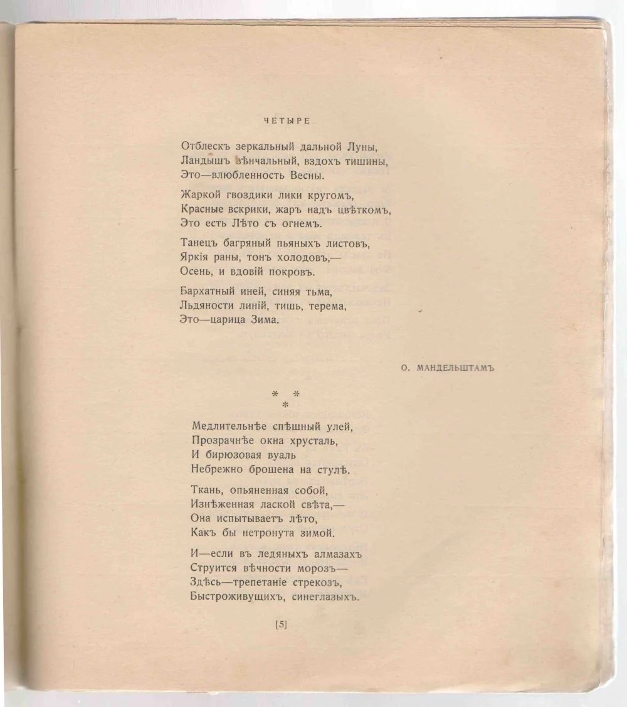
Город, дом и школа
Мандельштам родился в Варшаве в 1891 году. Детство прошло преимущественно в Петербурге – городе, к которому он будет возвращаться и в стихах.

Родители и детство
Эмиль Вениаминович, отец поэта, занимался торговлей кожевенными товарами. Флора Осиповна, мать, играла на фортепиано. Музыкальные впечатления и книги окружали Осипа с детства.
С 1900 по 1907 год он учился в Тенишевском училище – одном из заметных учебных заведений Петербурга. Там он получил гуманитарную подготовку и рано заинтересовался словом, историей, культурой.
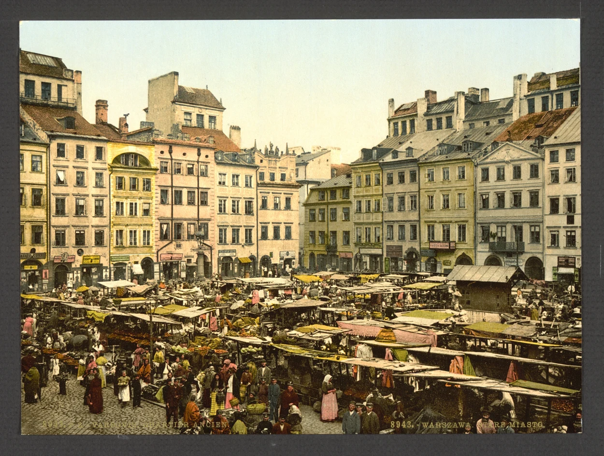
Тенишевское училище на Моховой
Мандельштам учился здесь в 1900–1907 годах. На открытке виден фасад училища. Сравните его с современной фотографией здания.
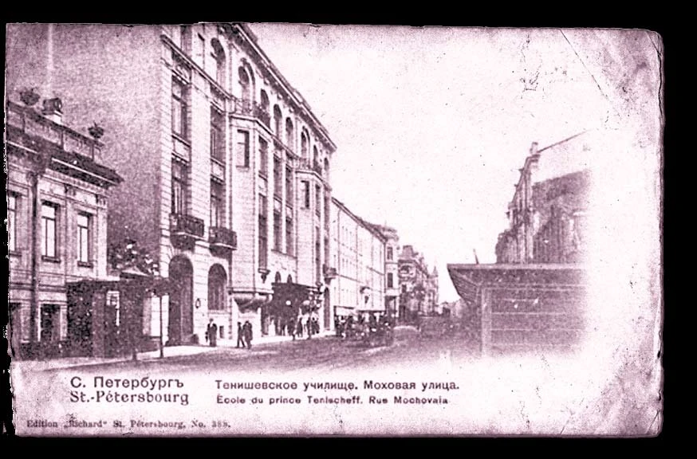
Париж, Гейдельберг, университет
После училища Мандельштам знакомился с европейской культурой в Париже и Гейдельберге. Его читательский мир выходил далеко за пределы одной страны.
Окончание Тенишевского училища. Далее – поездка в Европу.
Учёба и занятия литературой за границей: Париж, Гейдельберг.
Поступление на романо-германское отделение Петербургского университета. Препятствием были существовавшие ограничения для еврейских абитуриентов; перед поступлением поэт принял крещение.
Университетский курс остался незавершённым. Чтение, разговоры о литературе и самостоятельное изучение культуры продолжались.
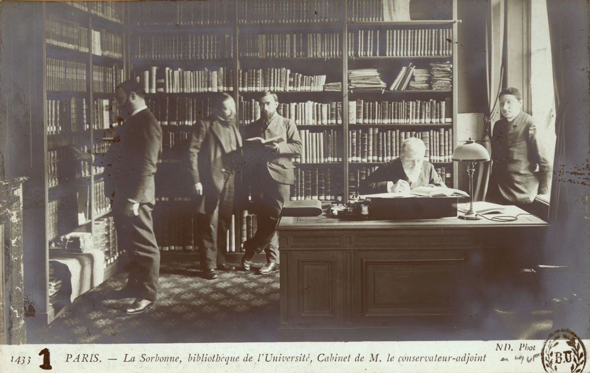
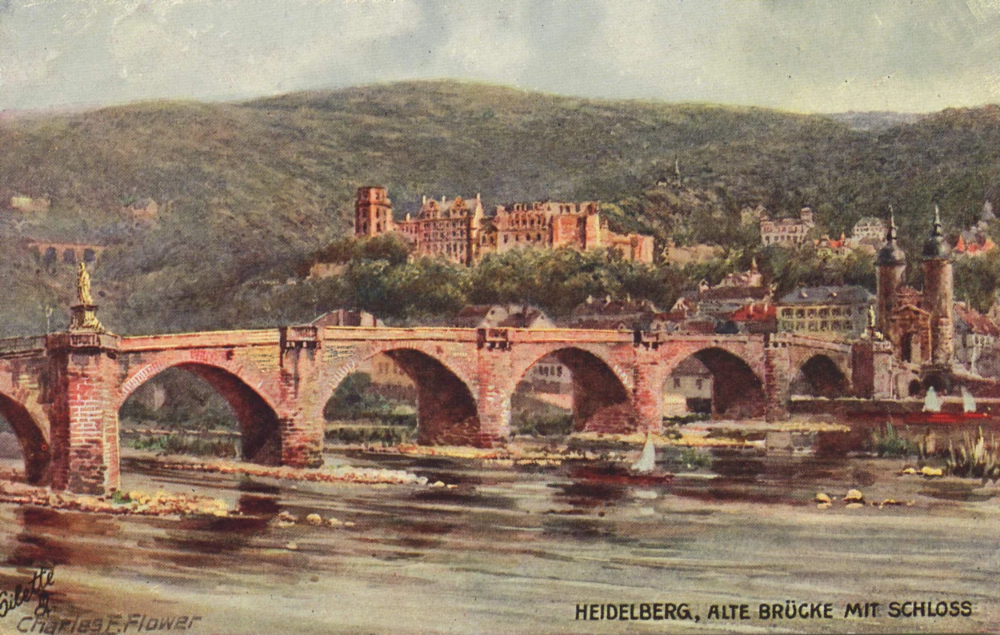
Учёба и чтение
В Париже Мандельштам слушал лекции Сорбонны. В Гейдельберге занимался филологией. Он много читал французских поэтов и постепенно входил в европейскую литературную традицию, которая позднее отразится в его собственных стихах.
Подробнее: Места памяти Мандельштама · НИУ ВШЭ ↗
Учёба в России и Европе
Нажмите на три события в том порядке, в котором они произошли. При необходимости сверьтесь с хронологией главы.
Как Мандельштам продолжил учёбу после Тенишевского училища?
«Дано мне тело – что мне делать с ним...»
Полный текст стихотворения 1909 года. В нём появляются образы садовника, цветка, стекла и узора.
Сверенный текст: Русская виртуальная библиотека ↗
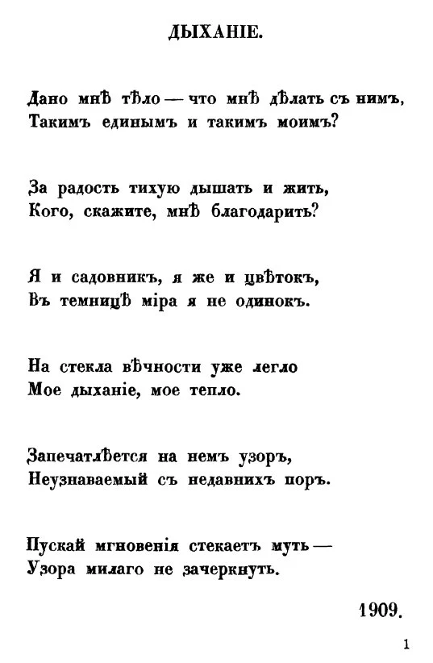
Первая книга «Камень» и литературный круг
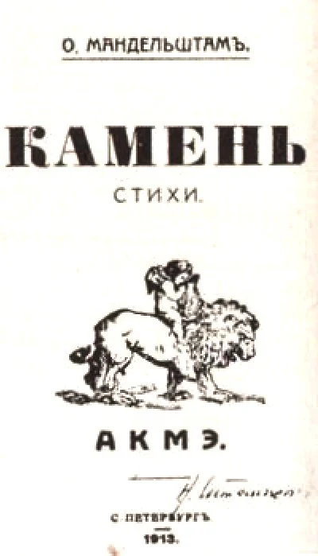
1910: стихи Мандельштама появляются в журнале «Аполлон».
1912–1913: поэт участвует в литературной жизни акмеистов. Среди близких поэтических собеседников – Николай Гумилёв и Анна Ахматова.
1913: выходит первая книга «Камень» – в первом издании 23 стихотворения. В этих текстах важны предметный мир, точность слова, античность и европейская культура. Сведения об издании · РВБ ↗


Поэты и художники рядом
Это фотография 1914 года – реальный эпизод литературного Петербурга. Мандельштам сидит рядом с Чуковским, Лившицем и Анненковым. Новые произведения обсуждали с друзьями, читали вслух, спорили о точности слова.
Фотография сделана через год после выхода первого издания «Камня».
Послушайте орган Баха
Мандельштам писал и о музыке. Прочитайте строку из стихотворения «Бах» (1913):
Звучит подлинное органное исполнение прелюдии Баха «Wachet auf, ruft uns die Stimme», BWV 645. Услышьте, как сочетаются несколько голосов органа.
И. С. Бах. Исполняет Рафаэль Гарро де Лабарр, орган церкви Сен-Максимен, Тьонвиль, 28 июля 2013. Запись: Fredamas. Вы можете выбрать 30-секундное прослушивание или включить полную запись 3 мин 21 с. При наличии MP3 в проигрывателе звучит сокращённый фрагмент. Оригинал записи · CC BY-SA 4.0.
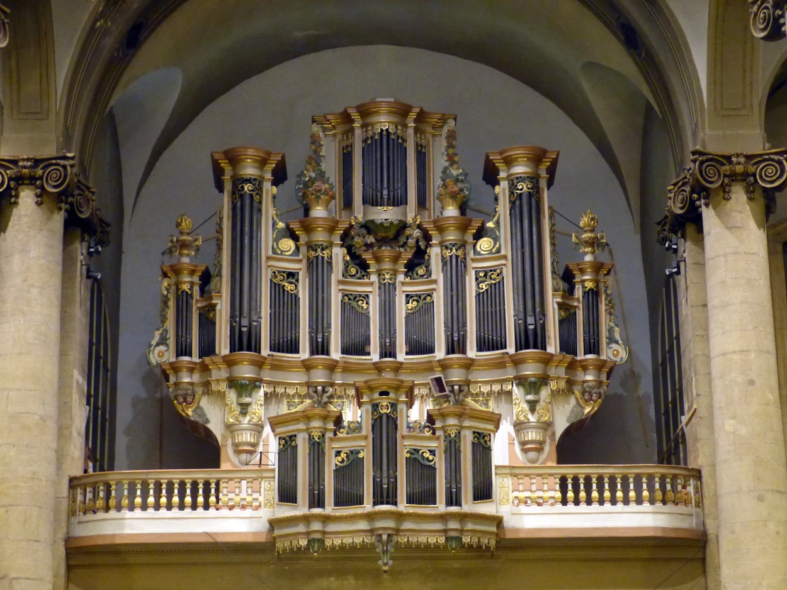
«Бах» (1913)
Стихотворение посвящено музыкальному переживанию. Поэт создаёт словесный образ мощного и многоголосого звучания органа.
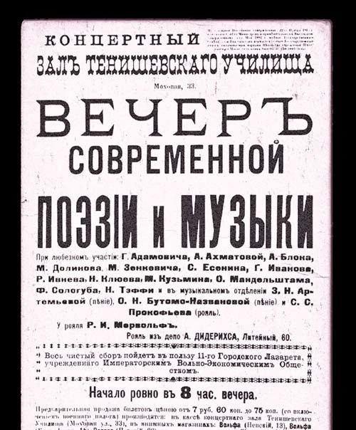
Надежда Хазина: рядом с поэтом

Осип Мандельштам знакомится с молодой художницей Надеждой Хазиной.
Они регистрируют брак. В последующие годы часто переезжают и живут в непростых материальных условиях.
Надежда слышала многие стихи одной из первых, обсуждала их с поэтом. Её роль в сохранении произведений станет особенно важной позднее.
В 1922 году появилась поэтическая книга «Tristia». В начале помещено посвящение «Н. Х.» – Надежде Хазиной. Её присутствие заметно в самом литературном наследии. Сведения об издании · РВБ ↗
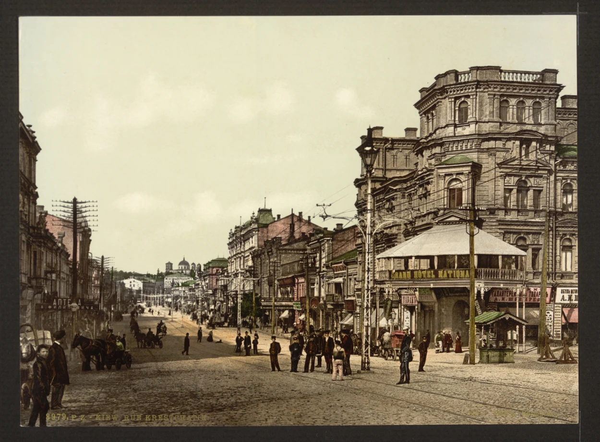
Надежда Мандельштам пережила мужа более чем на сорок лет. Её воспоминания и сохранённые копии стихов стали важнейшими источниками для изучения его жизни и творчества.
Возвращение в Ленинград
Петербург был городом детства Мандельштама. В стихотворении 1930 года он возвращается к нему уже взрослым человеком. Это произведение написано до ареста 1934 года.
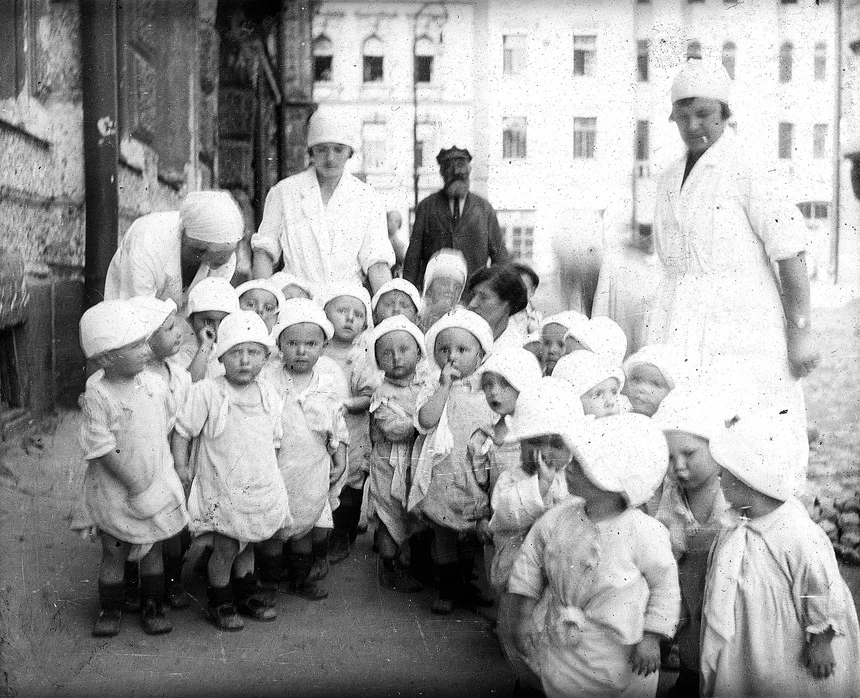

С 1925 года до осени 1930-го Мандельштам не создавал новых оригинальных стихов: работал переводчиком, писал книги для детей. Он вернулся к стихам в 1930 году после поездки в Армению. Этот биографический контекст помогает услышать новое напряжение «Ленинграда». Биография · РВБ ↗
«Ленинград» (1930)
Стихи, которые дошли до нас
В мае поэт был арестован, отправлен в Чердынь, затем в Воронеж. Надежда Яковлевна находилась рядом с ним в ссылке.
Воронежская ссылка. Мандельштам продолжает писать; позднее эти стихи вошли в «Воронежские тетради».
Второй арест. Поэт умер 27 декабря 1938 года в пересыльном лагере под Владивостоком.
Надежда Яковлевна и близкие друзья сохраняли стихотворения: заучивали, переписывали, передавали надёжным людям.

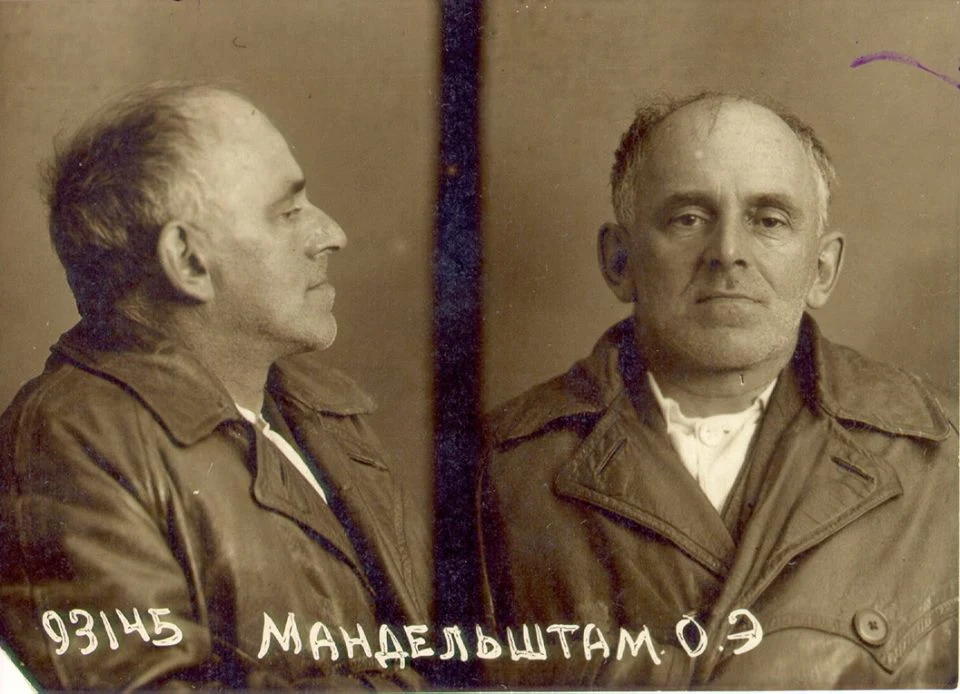
Последние годы поэта
- 1. Ленинград · 1930Возвращение в город детства и стихотворение «Ленинград»
- 2. Москва · 1934Первый арест
- 3. Чердынь · 1934Первое место ссылки
- 4. Воронеж · 1934–1937Ссылка и работа над стихами
- 5. Саматиха · 1938Второй арест
- 6. Под Владивостоком · 1938Пересыльный лагерь, гибель поэта
Мандельштам в Воронеже · музейные материалы · Переписка Натальи Штемпель о рукописях и копиях стихов
Мое дыхание, мое тепло»
Эти строки написаны в юности. После знакомства с историей Надежды Мандельштам они приобретают дополнительное звучание: стихи действительно сохранились в человеческой памяти и в рукописных копиях.
Ваш прежний вывод
Что запомнилось об Осипе Мандельштаме?
Здесь собраны ваши сохранённые ответы и прежние заметки. Они остаются в этом браузере после закрытия страницы.
МАНДЕЛЬШТАМ1891–1938
К следующему уроку: прочитайте «Бессонница. Гомер. Тугие паруса...» и выпишите два имени или слова, значение которых требует уточнения.